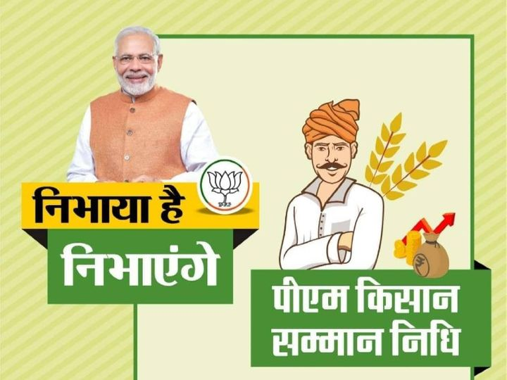
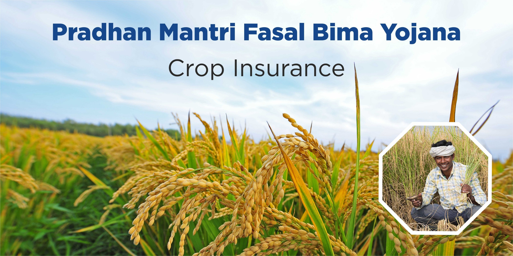
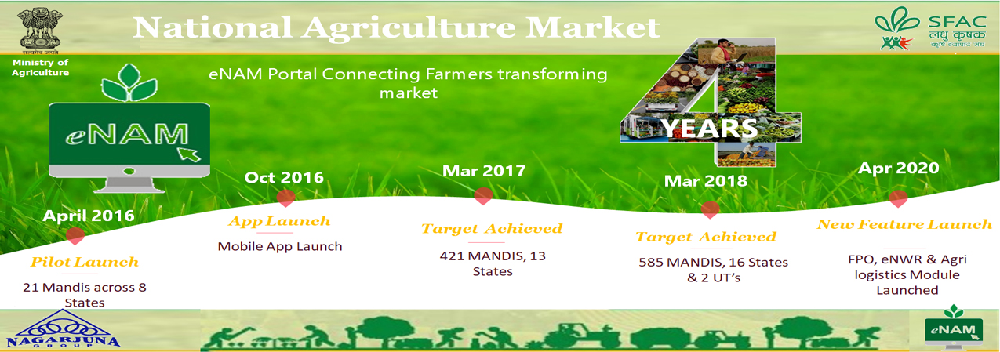
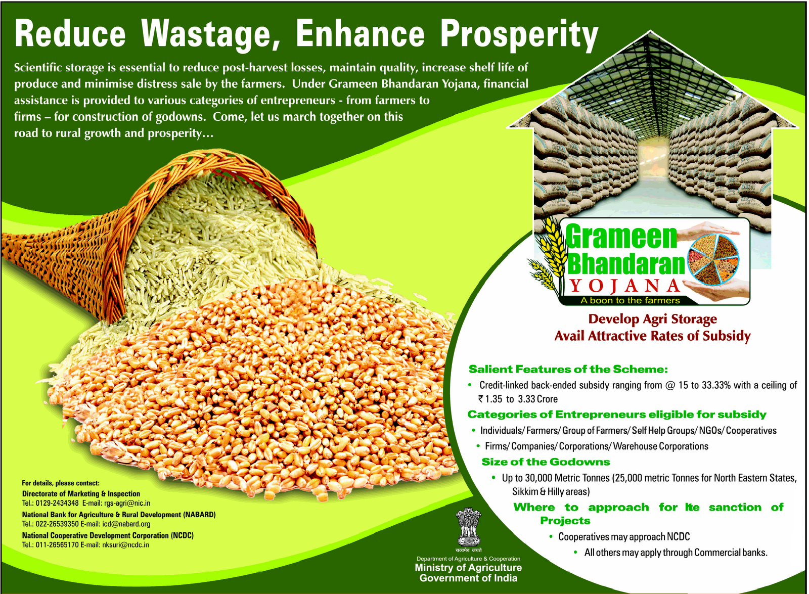
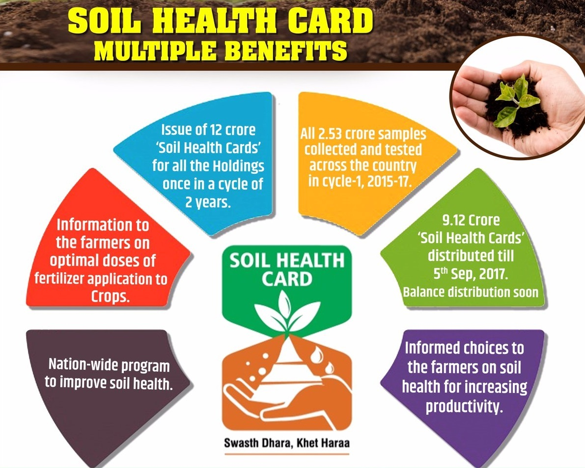
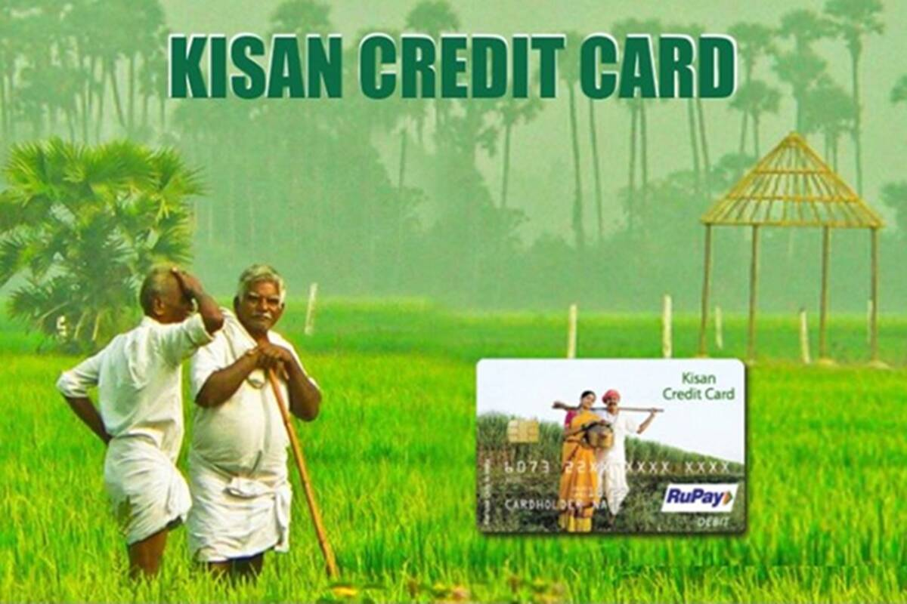

PM Kisan Samman Nidhi Yojna
Under this scheme, every year the central government transfers Rs 6,000 to the bank accounts of eligible beneficiary farmers. These farmers will get the benefit of PM Kisan Samman Nidhi Scheme :
- To take advantage of the PM Kisan Samman Nidhi Yojana, the farmer should have farming land in his name. If a farmer is doing farming but the field is not in his name, he will not be a beneficiary.
- If someone owns agricultural land, but is a government employee or has retired, the current or former MP, MLA, Minister does not get the benefit of PM Kisan Yojana.
- If a person owns a farm but gets a pension of more than 10 thousand rupees a month, he cannot be a beneficiary of this scheme.
- The guidelines define small and marginal farmers as farmer families in which the husband, wife and minor children have collectively cultivable land of two hectares or less as per the land records of the respective state or union territory.
- Those who are using agricultural land for other purposes instead of agricultural work.
Website link :- pmkisan.gov.in

PM Fasal Bima Yojana (PMFBY)
This scheme will help in decreasing the burden of premiums on farmers who take loans for their cultivation and will also safeguard them against the inclement weather.
Coverage of crops :
- Food crops (Cereals ,Millets and Pulses
- Oilseeds
- Annual Commercial / Annual Horticultural crops
In addition for perennial crops, pilots for coverage can be taken for those perennial horticultural crops for which standard methodology for yield estimation is available.
Objectives :
- To provide insurance coverage and financial support to the farmers in the event of failure of any of the notified crop as a result of natural calamities, pests & diseases.
- To stabilise the income of farmers to ensure their continuance in farming.
- To encourage farmers to adopt innovative and modern agricultural practices.
- To ensure flow of credit to the agriculture sector
Website link :- pmfby.gov.in

E-NAM
On April 14 2016, Prime Minister launched National Agriculture Market (NAM) as a pan-India electronic trading portal for farm produce which creates a unified national market for agricultural commodities by integrating the existing Agriculture Produce Market Committee (APMC) markets. This portal provides a single window service for all APMC related services and information, such as commodity arrivals and prices, provision for responding to the trade offers, buy and sell trade offers, among other services.
Features :
- It will enable farmers to showcase their produce through their nearby markets and facilitate traders from anywhere to quote price.
- It provides for a national e-market platform for transparent sale transactions. States desirous to join has to accordingly enact suitable provisions in their APMC Act.
- Liberal licensing of traders / buyers and commission agents by State authorities. There are no pre-conditions asking for physical presence or possession of shop /premises in the market yard. One license for a trader will be valid across all the markets in that State.
- Single point levy of market fees, i.e on the first wholesale purchase from the farmer.
- Harmonisation of quality standards of agricultural produce and infrastructure for quality testing is made available in every market to enable informed bidding by buyers. At present, Common tradable parameters have been developed for 25 commodities.
- Provision of Soil Testing Laboratories in/ or near a mandi has been provided to be used by the visiting farmers.
- States can have their own electronic platforms and can decide on linking them to NAM.
- NAM will ensure open price discovery and better returns to farmers as there is no state or national price.
- Farmers get more options for selling their produce. The market size for farmers would increase as he won’t be limited to a captive market.
- A farmer in south India can now sell his produce on the NAM to a trader in the west/north/east India based on price.
Website link :- enam.gov.in/web

National Mission for Sustainable Agriculture (NMSA)
National Mission for Sustainable Agriculture (NMSA) has been formulated for enhancing agricultural productivity especially in rainfed areas focusing on integrated farming, water use efficiency, soil health management and synergizing resource conservation. NMSA will cater to key dimensions of 'Water use efficiency', 'Nutrient Management' and 'Livelihood diversification' through adoption of sustainable development pathway by progressively shifting to environmental friendly technologies, adoption of energy efficient equipments, conservation of natural resources, integrated farming, etc.
Schemes under NMSA :
- Rainfed Area Development (RAD): RAD is being implemented by RFS Division.
- Soil Health Management (SHM): SHM is being implemented by INM Division.
- Sub Mission on Agro Forestry (SMAF): SMAF is being implemented by NRM Division.
- Paramparagat Krishi Vikas Yojana (PKVY): PKVY is being implemented by INM Division.
- Soil and Land Use Survey of India (SLUSI): Being implemented by RFS Division.
- National Rainfed Area Authority (NRAA): Being implemented by RFS Division.
- Mission Organic Value Chain Development in North Eastern Region (MOVCDNER): Being implemented by INM Division.
- National Centre of Organic Farming (NCOF): Being implemented by INM Division.
- Central Fertilizer Quality Control and Training Institute (CFQC&TI): implemented by INM Division.
Website link :- nmsa.dac.gov.in

Pradhan Mantri Krishi Sinchai Yojana (PMKSY)
Government launched the Pradhan Mantri Krishi Sinchai Yojana (PMKSY) in 2015 which resembles the Accelerated Irrigation Benefits Program, with minor differences in its way of implementation. It replaces the fragmented approach of the latter with an integrated approach, thereby congregating the investments in the irrigation sector. The scheme has basically combined three active projects under various ministries which is as follows :
- Accelerated Irrigation Benefit Program (Ministry of Water Resources).
- Integrated Watershed Management Program (Ministry of Rural Development).
- Farm Water Management project of the National Mission on Sustainable Agriculture.
Pradhan Mantri Krishi Sinchai Yojana was launched by the government with an aim to bring various ministries engaged in the use and recycling of water under one platform. Such an initiative will help in water budgeting based on purpose such as household, agriculture, and industries.
Website link :- pmksy.gov.in

PKVY
The Paramparagat Krishi Vikas Yojana (PKVY) – traditional farming improvement programme was launched in 2015. It is an extended component of Soil Health Management (SHM) under the Centrally Sponsored Scheme (CSS), National Mission on Sustainable Agriculture (NMSA). PKVY aims at supporting and promoting organic farming, reduction in dependence on fertilizers and agricultural chemicals, in turn, resulting in improvement of the soil health while increasing the yields. Organic food, thus produced will be linked with modern marketing tools and local markets. The revamped PKVY promotes organic farming through the adoption of organic village by cluster approach and Participatory Guarantee System of certification.
Objectives :
- The objective is to produce agricultural products free from chemicals and pesticides residues by adopting eco-
friendly, low- cost technologies. Key Thrust areas of PKVY in promoting organic farming include the following:
- Promote organic farming among rural youth/ farmers/ consumers/ traders.
- Disseminate latest technologies in organic farming.
- Utilize the services of experts from public agricultural research system in India.
- Organize a minimum of one cluster demonstration in a village.
Website link :- pgsindia-ncof.gov.in/pkvy/index.aspx

Gramin Bhandaran Yojana
Gramin Bhandaran Yojana is a capital investment subsidy scheme for the construction or renovation of rural warehouses or godowns for storing farm produce. The scheme is aimed at assisting farmers in increasing their holding capacity. This could, in turn, lead to the sale of produce at rewarding prices by avoiding distress sales.
Objectives :
- Create scientific storage capacity with allied facilities in rural areas to help farmers in storing farm produce, processed farm produce and agricultural inputs.
- Promote grading, standardization and quality control of agricultural produce so as to improve its marketability.
- Prevent distress sale immediately after harvest by providing the facility of pledge financing and marketing credit.
- Create a robust agricultural marketing infrastructure in the country by facilitating the creation of a national system of warehouse receipts in respect of agricultural commodities stored in such warehouses.
- Revive the prospects of agricultural investments by encouraging private and cooperative sectors to invest in the creation of storage infrastructure in the country.
Eligibilty :
- Marketing Boards
- Agro-processing co-operative societies
- Agro-processing corporations
- Agro-industrial corporations
- Other corporations
- Quality testing laboratories
- Partnership firms
- Companies
- Agricultural Produce Marketing Committees
- Farmers
- Proprietary firms
- Co-operatives
- Non-Governmental Organizations
- Farmers’ groups
- Self-help groups
Website link :- arthgyani.in/gramin-bhandaran-yojana/

Soil Health Card
A Soil Health Card is used to assess the current status of soil health and, when used over time, to determine changes in soil health that are affected by land management. A Soil Health Card displays soil health indicators and associated descriptive terms. The indicators are typically based on farmers' practical experience and knowledge of local natural resources. The card lists soil health indicators that can be assessed without the aid of technical or laboratory equipment. Soil Health Card (SHC) is a Government of India's scheme promoted by the Department of Agriculture & Co-operation under the Ministry of Agriculture and Farmers' Welfare. It is being implemented through the Department of Agriculture of all the State and Union Territory Governments. Soil Health Card Scheme is a very beneficial scheme for farmers. There are many farmers in India. And they do not know which types of crops they should grow to get maximum yield. Basically, they do not know the quality and the type of their soil. They might know by experience what crops grow and what crops fail. But they don't know what they can do to improve the condition of the soil.
Features :
- The government is planning to cover as many as all farmers under the scheme.
- The scheme will cover all the parts of the country.
- In the form of soil card, the farmers will get a report. And this report will contain all the details about the soil of their particular farm.
- A farm will get the soil card once in every 3 years.
What is a Soil Health Card?
SHC is a printed report that a farmer will be handed over for each of his holdings. It will contain the status of his soil with respect to 12 parameters, namely N,P,K (Macro-nutrients); S (Secondary- nutrient); Zn, Fe, Cu, Mn, Bo (Micro - nutrients); and pH, EC, OC (Physical parameters). Based on this, the SHC will also indicate fertilizer recommendations and soil amendment required for the farm.
Website link :- soilhealth.dac.gov.in/HealthCard/HealthCard/HealthCardPublic

PM Kisan Credit Card Yojana
Kisan Credit Card is a Government of India scheme which aims to save farmers from high-interest rates usually charged by money lenders in the unorganised sector. The interest rate can be as low as 2.00% under this scheme. Moreover, the repayment period is based on the harvesting or marketing period of the crop for which the loan amount was taken.
Features :
- Interest rate can be as low as 2.00%.
- Collateral free loans up to Rs. 1.60 lakh.
- Crop insurance scheme is also provided to farmers.
- Following Insurance coverage is provided
- Up to Rs. 50,000 against Permanent Disability and Death.
- Up to Rs. 25,000 is provided against other risks.
- Repayment period is based on the harvesting and marketing period of the crop for which the loan amount was taken out.
- Loan amount up to Rs. 3.00 lakh can be taken out by the card holder.
- Collateral is not required on loans up to Rs. 1.60 lakh.
- Farmers get high interest rate on the savings in their Kisan Credit Card Account.
- Simple interest rate is charged as long as the user makes prompt payment. Otherwise compound interest rate becomes applicable.
Eligibility :
- All farmers who are either individuals/Joint borrowers of the land and involved in farming or allied activities.
- Individuals who are owner cum cultivators.
- All the Tenant farmers or Oral lessees and Share Croppers in the agricultural land.
- Self Help Groups or Joint Liability Groups including tenant farmers or sharecroppers.
- Farmers should be eligible for a production credit of Rs.5,000 and above, and then he/she is entitled to a KCC.
- All such farmers who are eligible for short term credit loan towards crop production or any allied activities as well as non-farm activities.
- The farmers should be the residents of the bank’s operational area.
Website link :- pmkisan.gov.in